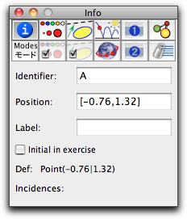

The Info Block
The first block presents information on the geometric definition of a geometric object. You can see and edit an object's name, its definition, incidences, and parameters. If you are not already in this block, you can switch to it by pressing the button
.
A typical info for a free point will look as follows:
 |
| The info of a free point |
In particular, you can see the name and the position of the point. These two attributes can also be changed by entering text. Furthermore, you see the defining mode of the point and that the point is incident to three lines
a,
b,
c.
There is a particularly nice fact about inspecting free elements. Their position parameters can be changed by typing an arbitrary
CindyScript expression. Thus if you type in the position field, for instance
[5,4], the point will be set to the exact
xy-coordinates (5, 6). You can even perform calculations in the position field. If you type in the expression
(B+C)/2, the point will be placed exactly in the middle between
B and
C. The point is still freely movable. More information about the places where CindyScript can be used is available in the
section on entering CindyScript.
Information about the Mode
Some modes, e.g.,
line by fixed angle and
circle by fixed radius, also have information that can be inspected. The fields for entering these are shown below the information area for the currently selected elements. The inspector will open automatically when these modes are selected to allow you to enter those parameters.
There may also be special occasions when the information block can be used to add further functionality. For instance the information block for texts includes a checkbox to turn the text into a button.